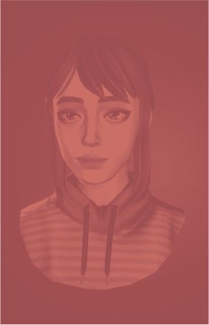
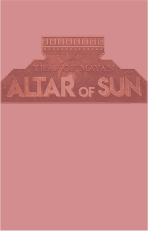

EPISODE
Mystery Puzzle in
Short Story Omnibus Format
Another Door is a horror/adventure-themed
mystery puzzle game
enjoyed in a short story omnibus format.
It invites players into immersive virtual worlds
such as
a secret laboratory where you're trapped in hallucinations.
Jacob’s Prison
삶에 대한 의지를 보여라, 마지막 기회마저 놓친다면 당신은 실험에 이용되고 처참히 버려질 것이다.
NEWS
The Latest on Another Door

PRESS KIT
More content
Check out the latest game materials, screenshots, logos,
and promotional images, and use them in your content.
MORE VIEW +
-

WALLPAPER
Download Another Door's stunning wallpapers to decorate your desktop and mobile devices.
-

ASSETS
Explore various character images and illustrations from the game. We provide high-quality images that capture each character's unique personality.
-

LOGO
Check and download Skonec's game logos. You can use them when creating reviews and content.
MEDIA GALLERY
a vivid episode

NOTICE
Game Trend Story
Stay updated with our game's latest news and updates!
We quickly deliver all information including
new episodes, events, patch notes, and more.
Don't miss out on the latest trends in the game - check them out now.

FAQ
FAQ
-
A
입력한 내용들이 출력됩니다.
입력한 내용들이 출력됩니다.
입력한 내용들이 출력됩니다.
입력한 내용들이 출력됩니다.